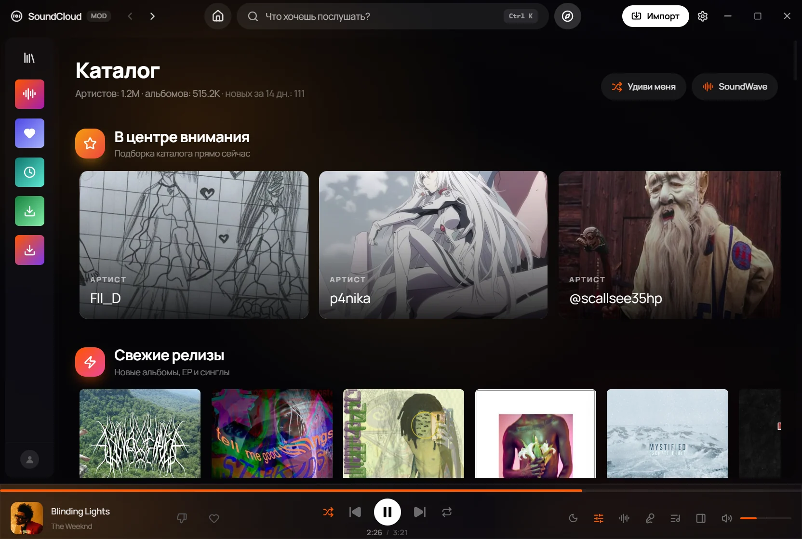
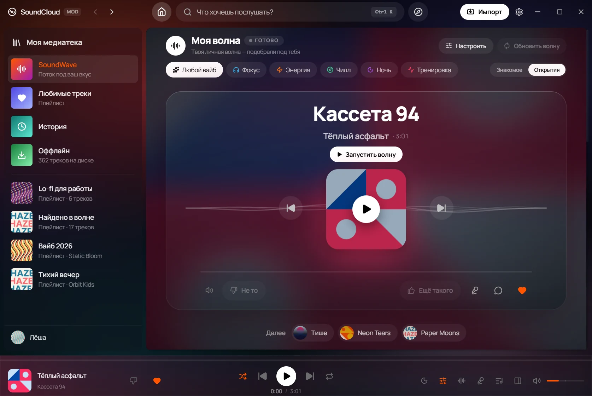

SoundCloud
без рекламы и капчи
Неофициальный клиент для Windows и Linux: своя волна, каталог, офлайн и три стиля интерфейса.
Бесплатно
Windows
Linux
Liquid Glass
Неофициальный клиент для Windows и Linux: своя волна, каталог, офлайн и три стиля интерфейса.

